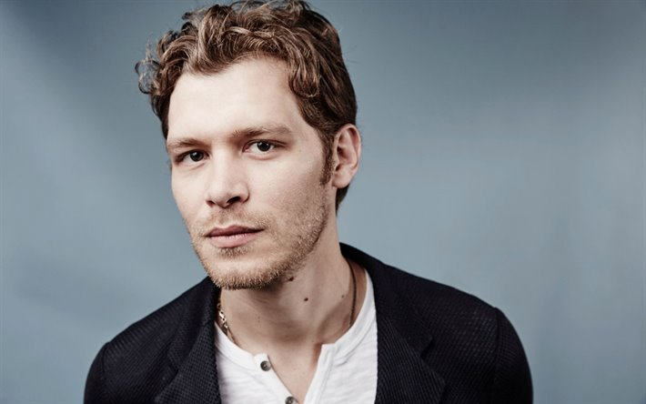

<ion-header mode="ios" class="ion-no-border bg-none">
  <div class="decoration-shape"></div>
  <ion-toolbar class="ion-padding-top px-3">
    <ion-chip class="location-chip ion-color-tertiary" (click)="selectLocation()">
      <ion-icon color="secondary" src="assets/icons/location.svg"></ion-icon>
      <ion-label>{{currentLocation.label}}</ion-label>
      <ion-icon color="secondary" name="chevron-down-outline"></ion-icon>
    </ion-chip>


    <ion-buttons slot="end" class="mr-2">
      <ion-button class="toolbar-item border notification-block border-primary">
        <ion-icon slot="icon-only" name="notifications-outline"></ion-icon>
        <ion-badge class="notification-badge" color="danger">1</ion-badge>
      </ion-button>
    </ion-buttons>


    <ion-item slot="end"
              class="ion-text-center toolbar-item  border border-softGray p-0.5"
              [detail]="false"
              lines="none">
      <ion-avatar class="mx-auto min-h-full min-w-full">
        
      </ion-avatar>
    </ion-item>
  </ion-toolbar>
</ion-header>


<ion-content [fullscreen]="true">

</ion-content>
